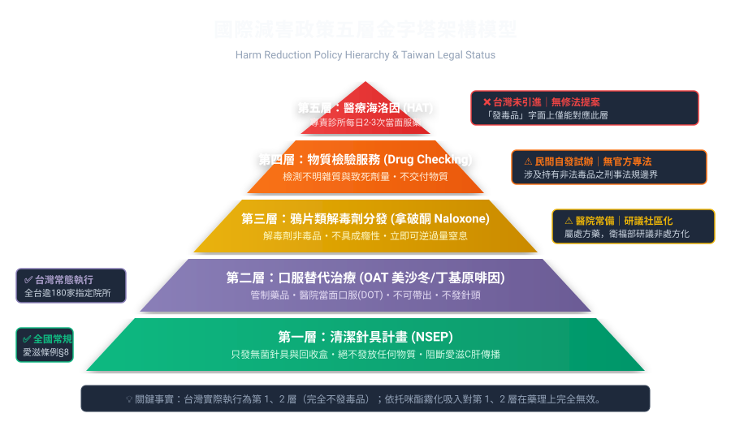
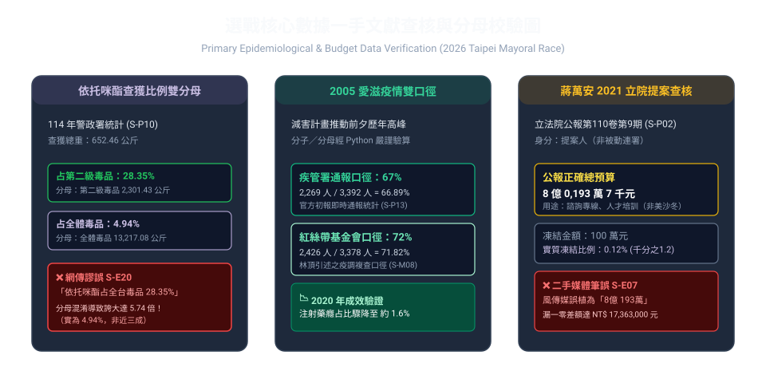

🟣 蔣陣營正式表態（S-M19，P2）
發言人陳柏翰 10/05 經中央社：「謝謝沈伯洋同意在 TVBS 辯論，期待 TVBS 盡快協調及安排。」
中時 10/05 報導 ↗拆解選戰中最核心的文字爭議與數據攻防。跳脫「引文真偽」的泥淖，釐清原始文本、立法公報與流行病學的真實邊界。
點擊各層級檢視台灣現況、國際實證等級與爭議指涉。釐清「清潔針具」到「海洛因輔助治療」的巨大法規與醫學鴻溝。
打破「挺沈 vs 挺蔣」的單向過濾。完整納入基層藥師四道紅線、成癮臨床醫師維持治療觀點、以及在地居民真實的鄰避治安擔憂。
即時搜尋並過濾流傳於社群、政論節目與 AI 摘要中的條號錯誤、概念謬誤與數據膨脹，每一項均附一手原始佐證。
從 2005 年台灣試辦減害、2014 柯震東案撲馬投書、2021 蔣萬安立院提案，到 2026 年 10 月攻防爆發的完整時空脈絡。
前端精選 24 件，完整 45 件見 timeline.csv／docs/02。
雙方已就 TVBS 辯論達成原則同意（簽署意向書），但 TVBS 官方口徑為「協商中、尚未定論」。時間、地點、主持人、形式、場次全部未定。完整調查見 docs/04-TVBS電視辯論進展.md（Q8）。
發言人陳柏翰 10/05 經中央社：「謝謝沈伯洋同意在 TVBS 辯論，期待 TVBS 盡快協調及安排。」
中時 10/05 報導 ↗發言人蔡一愷 10/06 經中央社：「已簽三立、民視、鏡電視與 TVBS，不指定任何一家，由各主辦公平協調。」沈本人：「無附帶條件，不限場地時間都 OK。」
中央社 10/06 源稿 ↗「辯論會執行程序仍在與雙方陣營協商中，尚未有定論，待確認相關細節後再向社會大眾宣布。」故僅為原則同意，非簽字定案。
Taiwan News 轉引 ↗公視 PNN 10/06 並陳：沈倡議第一場談毒品、蔣稱任何市政議題可談（含毒品），一定參加；交叉詰問是否設置仍待協商。
公視 10/06 聯訪 ↗民視稱 8/29 首邀、三立 9/9、鏡 9/16、TVBS 9/20；順序獲沈本人重複，但精確日期待第二源驗證。
民視 10/06 報導 ↗ · ETtoday 10/06 ↗10/05～10/06 查無新民調；最近為 9/22 信民（蔣 41.7% vs 沈 40.5%）。衛福部 10/05 三策略見央廣。
信民民調 ↗ · 央廣衛福部 ↗全站主張均可回溯至統一編號（S-P／S-M／S-N／S-C／S-D／S-E）。P1 為一手公報原文，P2 須標明立場，P3 須交叉，P4 不可單獨支撐。 完整註冊表見 SOURCE-REGISTRY.md，圖表總表見 docs/03-來源出處與圖表.md。


真實的研究承認未知。此處透明揭露原始調查間的 14 項真實衝突與時空空白（含新增 Q8：TVBS 辯論是否獨家定案，Q9–Q14 候選維持未定案待 P1），拒絕在缺乏證據時強行定案。
本知識庫共登錄 126 條事實性主張（含新增 §11 TVBS 辯論 10 條）與 76 個分級來源標記（79 獨立來源網址，含 TVBS 辯論 18 條新增連結）。 歡迎研究員、事實查核記者與廣大公民直接查閱、下載 Markdown 原始檔案，或提交 Pull Request 共同核實。
在 2026 台北市長選戰毒品議題爭議期間，我們在社群平台上目睹了大量「片面資訊、斷章取義、只挑對自家有利言論」的現象。極化動員嚴重壓縮了理性公共討論的空間，更掩蓋了當前真正致命的青年依托咪酯（喪屍煙彈）危機。
為此，公民發起人嘗試運用開源與 AI 工具（OpenClaw 爬蟲檢索、OpenCode 研發協作、Codex 程式分析等），廣泛蒐集一手公報、法規原文與醫學文獻，跳脫演算法濾泡。我們決定將所有資料、檢驗腳本與矩陣全數公開，呼籲各界放下情緒敵意，恢復理性政策討論。
授權歸屬：內容 CC BY 4.0／代碼 MIT，詳見專檔 §三。